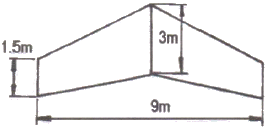
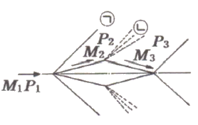
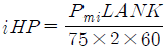
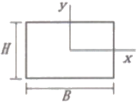
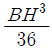
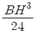
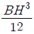
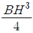
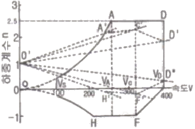
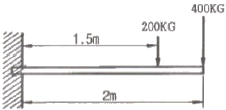

항공산업기사 (2018-09-15 기출문제)
1과목: 항공역학
1. 공기가 아음속의 흐름으로 풍동 내의 지점1을 밀도 ρ, 속도 250 m/s 로 통과하는 지점2를 밀도 4/5ρ인 상태로 지난다면 이 때 속도는 약 몇 m/s 인가? (단, 지점2의 단면적은 지점1의 1/2이다.)
- 155
- 215
- 465
- 625
(정답률: 54%)
2. 날개의 뒤젖힘각 효과(sweep back effect)에 대한 설명으로 옳은 것은?
- 방향안정과 가로안정 모두에 영향이 있다.
- 방향안정과 가로안정 모두에 영향이 없다.
- 가로안정에는 영향이 있고, 방향안정에는 영향이 없다.
- 방향안정에는 영향이 있고, 가로안정에는 형향이 없다.
(정답률: 74%)

3. 유도항력계수에 대한 설명으로 옳은 것은?
- 유도항력계수와 유도항력은 반비례한다.
- 유도항력계수는 비행기무게에 반비례한다.
- 유도항력계수는 양력의 제곱에 반비례한다.
- 날개의 가로세로비가 커지면 유도항력계수는 작아진다.
(정답률: 77%)
4. 중량이 2000 kgf 인 항공기가 받음각 4°로 등속수평비행을 하고 있을 때 이 항공기에 작용하는 항력은 몇 kgf 인가?(단, 받음각이 4이면 양항비가 20)
- 100
- 200
- 300
- 400
(정답률: 65%)
5. 프로펠러 깃의 받음각에 가장 큰 영향을 주는 2가지 요소는?
- 깃각과 인장력
- 굽힘모멘트와 추력
- 비행속도와 회전수
- 원심력과 공기탄성력
(정답률: 67%)
6. 그림과 같은 날개(wing)의 테이퍼비(taper ratio)는 얼마인가?

- 0.5
- 1.0
- 3.5
- 6.0
(정답률: 69%)
7. 그림과 같이 초음속 흐름에 쐐기형 에어포일 주위에 충격파와 팽창파가 생성될 때 각각의 흐름의 마하수(M)와 압력(P)에 대한 설명으로 옳은 것은?

- ㉠은 충격파이며 M1＞M2, P1＜P2이다.
- ㉡은 충격파이며 M2＜M3, P2＞P3이다.
- ㉠은 팽창파이며 M1＜M2, P1＞P2이다.
- ㉡은 팽창파이며 M2＞M3, P2＜P3이다.
(정답률: 71%)
8. 항공기가 선회경사각 30 로 정상선회할 때 작용하는 원심력이 3000 kgf 이라면 비행기의 무게는 약 몇 kgf 인가?
- 6150
- 6000
- 5800
- 5196
(정답률: 57%)
9. 수직강하와 함께 비행기의 자전(auto rotation)운동을 이루는 현상은?
- 스핀(spin) 현상
- 디프실속(deep stall) 현상
- 날개드롭(wing drop) 현상
- 가로방향 불안정(dutch roll) 현상
(정답률: 88%)
10. 항공기 총 중량 24000 kgf 의 75%가 주(제동)바퀴에 작용한다면 마찰계수가 0.7일 때 주바퀴의 최소 제동력은 몇 kgf 이어야 하는가?
- 5250
- 6300
- 12600
- 25200
(정답률: 79%)
11. 비행기의 세로안정을 향상시키는 방법이 아닌 것은?
- 꼬리날개효율을 높인다.
- 꼬리날개부피를 최대한 줄인다.
- 무게중심의 위치를 공기역학적 중심 앞으로 위치시킨다.
- 무게중심과 공기역학적 중심과의 수직거리를 양(+)의 값으로 한다.
(정답률: 81%)
12. 제트 비행기의 속도에 따른 추력변화 그래프 분석을 통해 알 수 있는 최대항속거리에 대한 조건으로 옳은 것은?
- 속도에 대한 필요추력의 비가 최대인 값
- 속도에 대한 필요추력의 비가 최소인 값
- 속도에 대한 이용추력의 비가 최대인 값
- 속도에 대한 이용추력의 비가 최소인 값
(정답률: 65%)
13. 회전익장치가 하나뿐인 헬리콥터는 질량이 큰 동체가 하나의 점에 매달려 있는 것과 같아 한번 흔들리면 전후·좌우로 자연스럽게 진동운동을 하게 되는데 이런 현상을 무엇이라 하는가?
- 지면효과(ground effect)
- 시계추작동(pendular action)
- 코리오리스 효과(coriolis effect)
- 편류(drift or translating tendency)
(정답률: 81%)
14. 지구를 둘러싸고 있는 대기를 지표에서 고도가 높아지는 방향으로 순서대로 나열한 것은?
- 성층권, 대류권, 중간권, 열권, 외기권
- 대류권, 중간권, 열권, 성층권, 외기권
- 성층권, 열권, 중간권, 대류권, 외기권
- 대류권, 성층권, 중간권, 열권, 외기권
(정답률: 90%)
15. 일반적인 프로펠러의 깃뿌리에서 깃끝으로 위치변화에 따른 깃각의 변화를 옳게 설명한 것은?
- 커진다.
- 작아진다.
- 일정하다.
- 종류에 따라 다르다.
(정답률: 74%)
16. 직경 20cm 인 원형배관이 직경 10cm 인 원형 배관과 연결되어 있다. 직경 20cm 인 원형배관을 지난 공기가 직경 10cm 인 원형배관을 지나게 되면 유속의 변화는 어떻게 되는가?
- 2배로 증가한다.
- 1/2로 감소한다.
- 4배로 증가한다.
- 1/4로 감소한다.
(정답률: 67%)
17. 수평꼬리날개에 의한 모멘트의 크기를 가장 옳게 설명한 것은? (단, 양(+), 음(-)의 부호는 고려하지 않는다.)
- 수평꼬리날개의 면적이 클수록, 수평꼬리날개 주위의 동압이 작을수록 커진다.
- 수평꼬리날개의 면적이 클수록, 수평꼬리날개 주위의 동압이 클수록 커진다.
- 수평꼬리날개의 면적이 작을수록, 수평꼬리날개 주위의 동압이 클수록 커진다.
- 수평꼬리날개의 면적이 작을수록, 수평꼬리날개 주위의 동압이 작을수록 커진다.
(정답률: 72%)
18. 항공기엔진이 정지한 상태에서 수직강하하고 있을 때 도달할 수 있는 최대속도인 종극속도 상태의 경우는?
- 항공기 양력과 항력이 같은 경우
- 항공기 양력의 수평분력과 항력의 수직분력이 같은 경우
- 항공기 총중량과 항공기에 발생되는 항력이 같아지는 경우
- 항공기 총중량과 항공기에 발생되는 양력이 같은 경우
(정답률: 71%)
19. 헬리콥터에서 양력 불균형이 일어나지 않도록 하는 주 회전날개 깃의 플래핑 작용의 결과로 나타나는 현상으로 옳은 것은?
- 후퇴하는 깃에는 최대상향 변위가 기수 전방에서 나타난다.
- 후퇴하는 깃에는 최대상향 변위가 기수 후방에서 나타난다.
- 전진하는 깃에는 최대상향 변위가 기수 후방에서 나타난다.
- 전진하는 깃에는 최대상향 변위가 기수 전방에서 나타난다.
(정답률: 47%)
20. 다음 중 양(+)의 가로안정성(lateral stability)에 기여하는 요소로 거리가 먼 것은?
- 저익(low wing)
- 상반각(dihedral angle)
- 후퇴각(sweep back angle)
- 수직꼬리날개(vertical tail)
(정답률: 66%)
2과목: 항공기관
21. 가스터빈엔진의 압축기 블레이드 오염(dirty or contamination)으로 발생되는 현상이 아닌 것은?
- 연료소모율 증가
- 엔진 서지(surge)
- 엔진 회전속도 증가
- 배기가스 온도 증가
(정답률: 64%)
22. 왕복엔진의 크랭크 핀(crank pin)의 속이 비어 있는 이유가 아닌 것은?
- 윤활유의 통로 역할을 한다.
- 열팽창에 의한 파손을 방지한다.
- 크랭크축의 전체 무게를 줄여준다.
- 탄소 침전물 등 이물질을 모으는 슬러지 실(sludge chamber) 역할을 한다.
(정답률: 66%)
23. 제트엔진에서 착륙거리를 줄이기 위하여 사용하는 장치는?
- 베인
- 방향타
- 노즐
- 역추력 장치
(정답률: 90%)
24. 압축비가 8인 경우 오토사이클(otto cycle)의 열효율은 약 몇 %인가?(단, 비열비는 1.4 이다.)
- 48.9
- 56.5
- 78.2
- 94.5
(정답률: 63%)
25. 터보제트엔진의 추진효율이 1일 때는?
- 비행속도가 음속을 돌파할 때
- 비행속도와 배기가스 속도가 같을 때
- 비행속도가 배기가스 속도보다 빠를 때
- 비행속도가 배기가스 속도보다 늦을 때
(정답률: 79%)
26. 열역학에서 가역과정에 대한 설명으로 옳은 것은?
- 마찰과 같은 요인이 있어도 상관없다.
- 주위의 작은 변화에 의해서는 반대과정을 만들 수 없다.
- 계와 주위가 항상 불균형 상태여야 한다.
- 과정이 일어난 후에도 처음과 같은 에너지양을 갖는다.
(정답률: 77%)
27. 항공기 연료 “옥탄가 90” 에 대한 설명으로 옳은 것은?
- 노말햅탄 10%에 세탄 90%의 혼합물과 같은 정도를 나타내는 가솔린이다.
- 연소 후에 발생하는 옥탄가스의 비율이 90% 정도를 차지하는 가솔린이다.
- 연소 후에 발생하는 세탄가스의 비율이 10% 정도를 차지하는 가솔린이다.
- 이소옥탄 90%에 노말햅탄 10%의 혼합물과 같은 정도를 나타내는 가솔린이다.
(정답률: 83%)
28. 윤활계통 중 오일탱크의 오일을 베어링까지 공급해 주는 것은?
- 트레인계통(drain system)
- 가압계통(pressure system)
- 브래더계통(breather system)
- 스캐빈지계통(scavenge system)
(정답률: 67%)
29. 비행속도가 V, 회전속도가 n(rpm)인 프로펠러의 1회전 소요시간이 60/n초 일 때 유효피치를 나타내는 식은?
- 60V/n
- 60n/V
- nV/60
- V/60
(정답률: 63%)
30. FADEC(full authority digital electronic control)에서 조절하는 것이 아닌 것은?
- 오일 압력
- 엔진 연료 유량
- 압축기 가변 스테이터 각도
- 실속 방지용 압축기 블리드 밸브
(정답률: 51%)
31. 왕복엔진의 고압 마그네토(magneto)에 대한 설명으로 틀린 것은?
- 콘덴서는 브레이커 포인트와 병렬로 연결되어 있다.
- 전기누설 가능성이 많은 고공용 항공기에 적합하다.
- 1차회로는 브레이커 포인트가 붙어있을 때에만 폐회로를 형성한다.
- 마그네토의 자기회로는 회전영구자석, 폴 슈(pole shoe) 및 철심으로 구성되어 있다.
(정답률: 70%)
32. 왕복엔진의 부자식 기화기에서 부자실(float chamber)의 연료 유면이 높아졌을 때 기화기에서 공급하는 혼합비는 어떻게 변하는가?
- 농후해진다.
- 희박해진다.
- 변하지 않는다.
- 출력이 증가하면 희박해진다.
(정답률: 77%)
33. 가스터빈엔진의 공압시동기(pneumatic)에 공급되는 고압공기 동력원이 아닌 것은?
- 지상동력장치(ground power unit)
- 보조동력장치(auxiliary power unit)
- 다른 엔진의 배기가스(exhaust gas)
- 다른 엔진의 블리드 공기(bleed air)
(정답률: 74%)
34. 왕복엔진에서 엔진오일의 기능이 아닌 것은?
- 재생작용
- 기밀작용
- 윤활작용
- 냉각작용
(정답률: 82%)
35. 다음 중 고공에서 극초음속으로 비행할 경우 성능이 가장 좋은 엔진은?
- 터보팬엔진
- 램제트엔진
- 펄스제트엔진
- 터보제트엔진
(정답률: 64%)
36. 속도 1080km/h 로 비행하는 항공기에 장착된 터보제트엔진이 중량유량 294kgf/s 로 공기를 흡입하여 400m/s 로 배기분사 시킬 때 진추력은 몇 N 인가?
- 1000
- 3000
- 29400
- 108000
(정답률: 55%)
37. 정속프로펠러의 블레이드 각이 증가하면 나타나는 현상은?
- 회전수가 감소한다.
- 엔진출력이 감소한다.
- 진동과 소음이 심해진다.
- 실속 속도가 감소하고 소음이 증가한다.
(정답률: 48%)
38. 겨울철 왕복엔진 작동(reciprocating engine operation in winter)전 점검사항이 아닌 것은?
- 연료 가열(fuel heating)
- 섬프 드레인(sump drain)
- 엔진 예열(engine preheat)
- 결빙 방지제 첨가(anti-icing fluid additive)
(정답률: 57%)
39. 항공용 왕복엔진의 효율과 마력에 대한 설명으로 틀린 것은?
- 지시마력은 지압선도로부터 구할 수 있다.
- 연료소비율(SFC)은 1마력당 1시간 동안의 연료소비량이다.
- 기계효율은 지시마력과 이론마력의 비이다.
- 축마력은 실제 크랭크축으로부터 측정한다.
(정답률: 58%)
40. 지시마력을 나타내는

에서 N이 의미하는 것은? (단, Pmi : 지시평균 유효압력, L : 행정길이, A : 실린더 단면적, K : 실린더 수이다.)- 축마력
- 기계효율
- 제동평균 유효압력
- 엔진의 분당 회전수
(정답률: 83%)
3과목: 항공기체
41. 다음 AA(Aluminum Association) 규격의 알루미늄 합금 중 마그네슘 성분이 없거나 가장 적게 함유된 것은?
- 2024
- 3003
- 5⑤2
- 7075
(정답률: 60%)
42. 다음 중 날개에 발생한 비틀림 하중을 감당하기에 가장 효과적인 것은?
- 스파
- 스킨
- 리브
- 토션박스
(정답률: 50%)
43. 항공기 기체의 비틀림 강도를 높이기 위한 방법으로 틀린 것은?
- 기체의 길이를 증가시킨다.
- 기체 표피의 두께를 증가시킨다.
- 표피소재의 두께를 증가시킨다.
- 기체의 극단면 2차 모멘트를 증가시킨다.
(정답률: 74%)
44. 금속판재를 굽힘가공할 때 응력에 의해 영향을 받지 않는 부위를 무엇이라 하는가?
- 굽힘선(bend line)
- 몰드선(mold line)
- 중립선(neural line)
- 세트백 선(setback line)
(정답률: 69%)
45. 항공기가 비행 중 오른쪽으로 옆놀이 현상이 발생하였다면 지상 정비작업으로 옳은 것은?
- 왼쪽 보조날개 고정탭을 올린다.
- 방향타의 탭을 왼쪽으로 굽힌다.
- 오른쪽 보조날개 고정탭을 올린다.
- 방향타의 탭을 오른쪽으로 굽힌다.
(정답률: 65%)
46. 높이가 H 이고, 폭이 B 인 그림과 같은 직사각형의 무게중심을 원점으로 하는 X 축에 대한 관성모멘트는?(오류 신고가 접수된 문제입니다. 반드시 정답과 해설을 확인하시기 바랍니다.)





(정답률: 63%)
47. 경항공기에 사용되는 일반적인 고무완충식 착륙장치(landing gear)의 완충효율은 약 몇 % 인가?
- 30
- 50
- 75
- 100
(정답률: 76%)
48. 2개의 알루미늄 판재를 리벳팅하기 위해 구멍을 뚫으려할 때 판재가 움직이려 한다면 사용해야 하는 것은?
- 클레코
- 리머
- 버킹바
- 뉴메틱 해머
(정답률: 82%)
49. 다음 중 부식의 종류에 해당하지 않는 것은?
- 응력 부식
- 표면 부식
- 입자간 부식
- 자장 부식
(정답률: 82%)
50. 알루미나(alumina)섬유의 특징으로 틀린 것은?
- 은백색으로 도체이다.
- 금속과 수지와의 친화력이 좋다.
- 표면처리를 하지 않아도 FRP나 FRM으로 할 수 있다.
- 내열성이 뛰어나 공기중에서 1300℃로 가열해도 취성을 갖지 않는다.
(정답률: 57%)
51. 샌드위치구조의 특징에 대한 설명이 아닌 것은?
- 습기와 열에 강하다.
- 기존의 보강재보다 중량당 강도가 크다.
- 같은 강성을 갖는 다른 구조보다 무게가 가볍다.
- 조종면(control surface)이나 뒷전(trailing edge) 등에 사용된다.
(정답률: 73%)
52. 볼트그립 길이와 볼트가 장착되는 재료의 두께에 관한 설명으로 옳은 것은?
- 볼트가 장착될 재료의 두께는 볼트그립 길이의 2배여야 한다.
- 볼트그립 길이는 가장 얇은 판 두께의 3배가 되어야 한다.
- 볼트가 장착될 재료의 두께는 볼트그립 길이에 볼트 직경의 길이를 합한 것과 같아야 한다.
- 볼트그리버 길이는 볼트가 장착되는 재료의 두께와 같거나 약간 길어야 한다.
(정답률: 64%)
53. 항공기에 일반적으로 사용하는 리벳 중 순수 알루미늄(99.45%)으로 구성된 리벳은?
- 1100
- 2017-T
- 5⑤6
- 2117-T
(정답률: 78%)
54. 케이블 턴버클 안전결선방법에 대한 설명으로 옳은 것은?(오류 신고가 접수된 문제입니다. 반드시 정답과 해설을 확인하시기 바랍니다.)
- 배럴의 검사구멍에 핀을 꽂아 핀이 들어가지 않으면 양호한 것이다.
- 단선식 결선법은 턴버클 엔드에 최소 10회 감아 마무리한다.
- 복선식 결선법은 케이블 직경이 1/8 in 이상인 경우에 주로 사용한다.
- 턴버클엔드의 나사산이 배럴 밖으로 10개 이상 나오지 않도록 한다.
(정답률: 68%)
55. 조종 케이블이 작동 중에 최소의 마찰력으로 케이블과 접촉하여 직선운동을 하게 하며, 케이블을 작은 각도 이내의 범위에서 방향을 유도하는 것은?
- 풀리(pulley)
- 페어리드(fair lead)
- 벨 크랭크(bell crank)
- 케이블드럼(cable drum)
(정답률: 69%)
56. 그림과 같은 수송기의 V-n 선도에서 A와 D의 연결선은 무엇을 나타내는가?

- 돌풍하중배수
- 양력계수
- 설계 순항속도
- 설계제한 하중배수
(정답률: 70%)
57. 항공기 나셀에 대한 설명으로 틀린 것은?
- 나셀의 구조는 세미모노코크구조 형식으로 세로부재와 수직부재로 구성되어 있다.
- 항공기 엔진을 동체에 장착하는 경우에도 나셀의 설치는 필요하다.
- 나셀은 외피, 카울링, 구조부재, 방화벽, 엔진마운트로 구성되며 유선형이다.
- 나셀은 안으로 통과하여 나가는 공기의 양을 조절하여 엔진의 냉각을 조절한다.
(정답률: 52%)
58. 다음 중 한쪽에서만 작업이 가능하도록 고안된 리벳이 아닌 것은?
- 리브 너트(rivnut)
- 체리 리벳(cherry rivet)
- 폭발 리벳(explosive rivet)
- 솔리드 생크 리벳(solid shank rivet)
(정답률: 75%)
59. 엔진이 2대인 항공기의 엔진을 1750kg 의 모델에서 1850kg 의 모델로 교환하였으며, 엔진은 기준선에서 후방 40cm 에 위치하였다. 엔진을 교환하기 전의 항공기 무게평형(weight and balance)기록에는 항공기 무게 15000kg, 무게중심은 기준선 후방 35cm 에 위치하였다면, 새로운 엔진으로 교환 후 무게중심위치는?
- 기준선 전방 약 32cm
- 기준선 전방 약 20cm
- 기준선 후방 약 35cm
- 기준선 후방 약 45cm
(정답률: 62%)
60. 그림과 같이 길이 2m 인 외팔보에 2개의 집중하중 400kg, 200kg 이 작용할 때 고정단에 생기는 최대굽힘모멘트의 크기는 약 몇 kg-m 인가?

- 1000
- 1100
- 1200
- 1500
(정답률: 68%)
4과목: 항공장비
61. 항공기에서 레인 리펠런트(rain repellent)를 사용하기 가장 적합한 때는?
- 많은 눈이 내릴 때
- 블리드 공기를 사용할 수 없을 때
- 폭우가 내려 시야를 확보할 수 없을 때
- 윈드실드(windshield)가 결빙되어 있을 때
(정답률: 83%)
62. 저주파 증폭기에서 수신기 전체의 성능을 판단할 때 활용되는 특성이 아닌 것은?
- 감도
- 검출도
- 충실도
- 선택도
(정답률: 47%)
63. 다음 중 3상 교류를 사용하는 항공용 계기는?
- 데신(desyn)
- 오토신(autosyn)
- 전기용량식 연료량계
- 전자식 타코메타(tachometer)
(정답률: 75%)
64. 항공기 VHF 통신장치에 관한 설명으로 틀린 것은?
- 근거리 통신에 이용된다.
- VHF 통신 채널 간격은 30kHz 이다.
- 수신기에는 잡음을 없애는 스퀠치회로를 사용하기도 한다.
- 국제적으로 규정된 항공 초단파 통신주파수 대역은 108~136MHz 이다.
(정답률: 58%)
65. 다음 중 일반적인 계기의 구성부가 아닌 것은?
- 수감부
- 지시부
- 확대부
- 압력부
(정답률: 56%)
66. 다음 중 전위차 및 기전력의 단위는?
- 볼트(V)
- 오옴(Ω)
- 패러드(F)
- 암페어(A)
(정답률: 66%)
67. 자동조종항법장치에서 위치정보를 받아 자동적으로 항공기를 조종하여 목적지까지 비행시키는 기능은?
- 유도기능
- 조종 기능
- 안정화 기능
- 방향탐지 기능
(정답률: 68%)
68. 유압계통에서 열팽창이 적은 작동유를 필요로 하는 1차적인 이유는?
- 고 고도에서 증발감소를 위해서
- 화재를 최대한 방지하기 위해서
- 고온일 때 과대압력 방지를 위해서
- 작동유의 순환불능을 해소하기 위해서
(정답률: 79%)
69. 고도계 오차의 종류가 아닌 것은?
- 눈금오차
- 밀도오차
- 온도오차
- 기계적오차
(정답률: 62%)
70. 항공기의 조명계통(light system)에 대한 설명으로 옳은 것은?
- 객실(cabin)의 조명은 일반적으로 형광등(flood light)에 의해 직접 조명된다.
- 충돌방지등(anti-collision light)은 비행 중에만 점멸(flashing)된다.
- 패슨 시트 벨트(fasten seat belt) 사인 라이트(sign light)는 항공기의 비행자세에 따라 자동으로 조종(On/Off control) 된다.
- 조종실의 인테그랄 인스투르먼트 라이트(integral instrument light)는 포텐시오미터(potentiometer)에 의해 디밍 컨트롤(dinning control) 할 수 있다.
(정답률: 60%)
71. 계기 지시속도가 일정 할 때 기압이 낮아지면 진대기속도의 변화는?
- 감소한다.
- 증가한다.
- 변화가 없다.
- 변화는 일정하지 않다.
(정답률: 55%)
72. 다음 중 항공기에 사용되는 화재 탐지기가 아닌 것은?
- 저항 루프(loop)형 탐지기
- 바이메탈(bimetal)형 탐지기
- 열전대(thermocouple)형 탐지기
- 코일을 이용한 자기(magnetic)형 탐지기
(정답률: 66%)
73. 유압계통에 있는 축압기(accumulator)의 설치 위치로 가장 적합한 곳은?
- 공급라인(supply line)
- 귀환라인(return line)
- 작업라인(working line)
- 압력라인(pressure line)
(정답률: 65%)
74. 축전지에서 용량의 표시기호는?
- Ah
- Bh
- Vh
- Fh
(정답률: 78%)
75. 지자기의 3요소가 아닌 것은?
- 복각(dip)
- 편차(variation)
- 자차(deviation)
- 수평분력(horizontal component)
(정답률: 56%)
76. 기상레이다(weather radar)에 대한 설명으로 틀린 것은?
- 반사파의 강함은 강우 또는 구름 속의 물방울 밀도에 반비례한다.
- 청천 난기류역은 기상레이다에서 감지하지 못한다.
- 영상은 반사파의 강약을 밝음 또는 색으로 구별한다.
- 전파의 직진성, 등속성으로부터 물체의 방향과 거리를 알 수 있다.
(정답률: 53%)
77. 5 A/50 mV 인 분류기저항 양단에 걸리는 전압이 0.04V 인 경우 이 회로의 전원버스에 흐르는 전류는 몇 A 인가?
- 1
- 2
- 3
- 4
(정답률: 48%)
78. 다음 중 직류전동기가 아닌 것은?
- 유도전동기
- 복권전동기
- 분권전동기
- 직권전동기
(정답률: 61%)
79. 다음 중 회로보호 장치로 볼 수 없는 것은?
- 퓨즈
- 계전기
- 회로차단기
- 열보호장치
(정답률: 74%)
80. 미국연방항공국(FAA)의 규정에 명시된 항공기의 최대 객실고도는 약 몇 ft 인가?
- 6000
- 7000
- 8000
- 9000
(정답률: 85%)